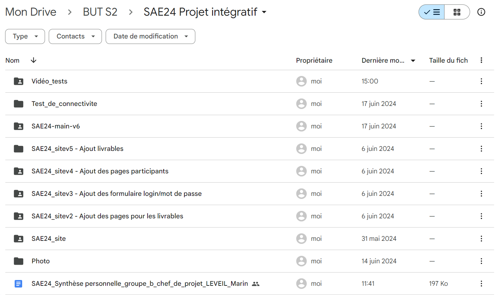

Gantt
Vous pouvez voir ici le diagramme de Gantt que nous avons réalisé pour ce projet. Un diagramme de Gantt est un outil utilisé en ordonnancement et en gestion de projet et permettant de visualiser dans le temps les diverses tâches composant un projet.
Télécharger notre diagramme de GanttGitHub
Dans le cadre de la SAE 24, nous avons utilisé l'outil GitHub. GitHub est une plateforme de gestion de code source utilisant Git. Il nous permet de collaborer, de gérer des versions de code, de suivre les modifications, et de travailler sur des projets en équipe de manière efficace. Il nous a été utile pour la gestion des nombreuses versions de notre site web.
Analyse de la Capture d'Écran :
Images : Contient les fichiers images que nous avons utilisé pour le projet PHP : Contient des scripts PHP pour la gestion des connexions utilisateurs, pour les redirections entre certaines pages grâce au formulaire. Scripts : Ce répertoire contient tous les scripts HTML que nous avons utilisé pour la réalisation du site web. Style : Il contient les différents fichiers CSS pour le style et la mise en page. Téléchargement : C'est le dernier répertoire que nous avons ajouté dans GitHub. Il contient les fichiers téléchargeables pour certains livrables.

Lien vers notre projet GitHub :
Google Drive
Google Drive est un service de stockage en ligne proposé par Google, nous permettant de sauvegarder, partager et collaborer sur des fichiers et des dossiers dans le cloud. Dans notre cas, nous avons utilisé la solution Google Drive pour les mêmes raisons que GitHub, à savoir stocker facilement les versions de notre projet, notamment le site web. Vous pouvez donc voir ci-dessous différentes versions de notre site web.
 Retourner en haut de la page